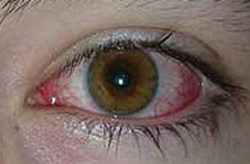

Conjuntivite
Com a chegada das baixas temperaturas e a possibilidade de ter ambientes pouco ventilados, cresce a incidência de algumas doenças como a conjuntivite. Trata-se de uma inflamação da conjuntiva – membrana transparente e fina que reveste o olho e a parte interna das pálpebras.
“No frio é mais comum ficarmos em ambientes fechados e aglomerados. Isso aumenta o contato com outras pessoas, nos deixando mais vulneráveis para contrairmos a conjuntivite”, explica a oftalmologista, Dra. Ana Paula Canto.
A médica esclarece que a doença afeta os dois olhos e pode ser causada por microorganismos, como bactérias e vírus, ter origem alérgica ou por produtos irritantes, a exemplo poluição e produtos químicos. “Apesar de se desenvolver por variadas questões, são contagiosas apenas as conjuntivites adquiridas por bactérias ou vírus”, conta.

Sinais e sintomas
Os primeiros sintomas são olhos vermelhos, coceira, secreção nos olhos, lacrimejamento, inchaço das pálpebras e sensação de “corpo estranho” dentro dos olhos, segundo a médica “uma areia nos olhos”.
“Em média, as conjuntivites bacterianas duram cerca de sete dias, já a conjuntivite viral pode durar várias até semanas, podendo trazer algumas sequelas, inclusive na qualidade visual”, ressalta a oftalmologista.
Dra. Ana Paula salienta que é importante orientar quem está com conjuntivite viral ou bacteriana a tomar as precauções de contágio. "Essas pessoas não devem cumprimentar outras com beijo ou aperto de mão ou abraços, evitar lugares aglomerados, lavar as mãos com frequência, usar lenços apenas de papel para enxugar lágrimas ou secreções, não compartilhar toalhas de banho ou rosto, trocar diariamente as fronhas de travesseiro, não coçar os olhos, não compartilhar maquiagem ou cosméticos e não usar rímel ou delineador", ensina.
Tratamento
A oftalmologista também explica que o tratamento é realizado de acordo com o tipo de conjuntivite. “Se a causa for bacteriana, prescrevemos antibiótico; se for viral, o paciente usará apenas colírios sintomáticos, pois não há um colírio capaz de matar o vírus.
Se alérgica, prescreveremos um antialérgico”, comenta.
Segundo ela, as famosas “compressas” também podem ajudar na conjuntivite. “Independente da causa da conjuntivite, compressas geladas feitas com algodão e gaze são sempre úteis no alívio dos sintomas. Mas, não deve-se utilizar lenços de pano ou toalhas, para que não haja o recontágio”, afirma.
“O importante é sempre consultar um oftalmologista para que a causa seja identificada e tratada da melhor maneira possível.”